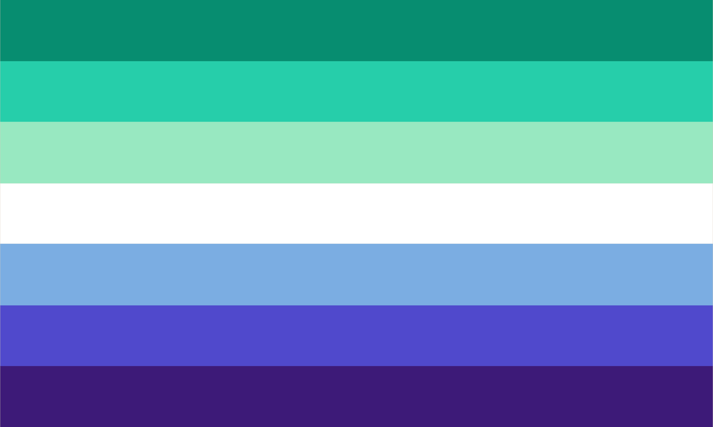

My Poems
Poems I Like
Gay Poetry
"Love and Death"
"Sonnet 16"
“We Two Boys Together Clinging”
"I sit alone at last, and therefore with you"
"Shadwell Stair"
Siegfried Sassoon, British & Gay Poet :3

Poet Profiles
 This is the gay male flag, because the poet was gay or proof exists of them having same-sex attraction :3 Lord Byron This is the gay male flag, because the poet was gay or proof exists of them having same-sex attraction :3
This is the gay male flag, because the poet was gay or proof exists of them having same-sex attraction :3 Siegfreid Sassoon This is the gay male flag, because the poet was gay or proof exists of them having same-sex attraction :3
This is the gay male flag, because the poet was gay or proof exists of them having same-sex attraction :3 Wilfred Owen This is the gay male flag, because the poet was gay or proof exists of them having same-sex attraction :3
This is the gay male flag, because the poet was gay or proof exists of them having same-sex attraction :3 Walt Whitman This is the gay male flag, because the poet was gay or proof exists of them having same-sex attraction :3